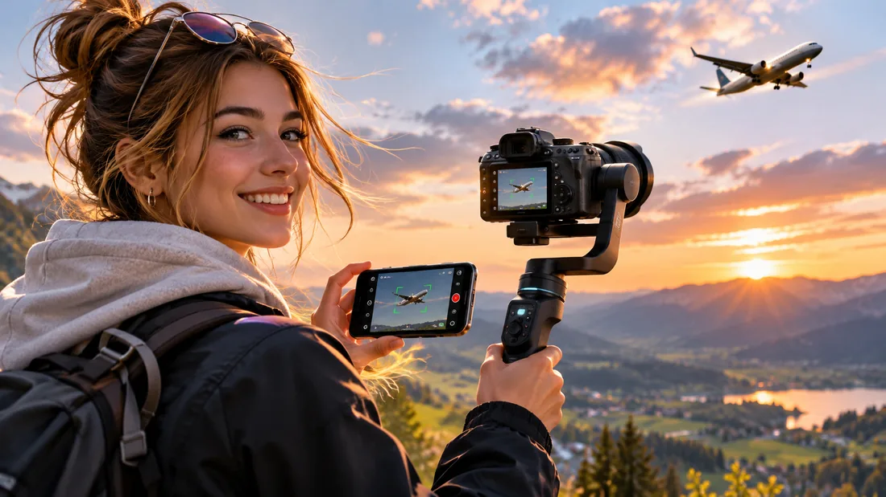

크리에이터와 친구들
첫 브이로그부터 친구들과의 즉흥적인 순간까지, Keepsight가 움직임을 프레임 안에 담도록 도와줍니다. 중요한 것을 고르고 자연스럽게 촬영하세요. 매 장면을 기술 프로젝트로 만들지 않고도 일상 영상을 더 즐길 수 있습니다.
테이블, 삼각대 또는 짐벌에 세워 두고 화면 안으로 들어가세요. 움직이는 동안 Keepsight가 당신을 프레임 안에 담습니다.
설명서 읽기사람 촬영은 무료이며 무제한입니다. Keepsight는 현재 베타 테스트 중이며 아직 App Store에서 제공되지 않습니다.
iPhone을 어딘가에 기대어 세우거나, 삼각대를 쓰거나, 짐벌에 끼우세요.
Keepsight가 당신을 인식하고 따라갑니다. 짐벌이 없어도 비디오의 프레임이 당신과 함께 움직입니다.
녹화 버튼을 누르고 완성된 비디오를 앱에서 바로 공유하세요.
Keepsight는 짐벌 없이도 손에 들거나 작은 삼각대에 올려 쓸 수 있는 완전한 카메라 앱입니다. 브이로그, 셀피, 단체 사진을 위해 만들어졌습니다.
iPhone을 세워 두고 직접 화면 안으로 들어가세요. Keepsight Pro에서는 모두가 웃거나 카메라를 볼 때 앱이 알아서 사진을 찍습니다.
눈앞에서 벌어지는 일과 나의 반응을 동시에 촬영하세요. Keepsight Pro에서는 셀피가 비디오 안에 작은 화면으로 나타납니다.
모터 없이도 Keepsight는 크롭이 피사체를 부드럽게 따라가는 비디오를 저장합니다. Keepsight Pro에서는 2K입니다. 손에 들고도 작동합니다.
손 제스처나 음성으로 비디오를 시작하거나 사진을 찍으세요. 카운트다운이 있어 모두가 준비할 수 있습니다.
Keepsight Pro에서는 노출, ISO, 셔터, 화이트 밸런스, 틴트, 초점을 각각 따로 직접 설정할 수 있습니다. 건드리지 않은 값은 자동으로 유지됩니다.


Keepsight는 녹화 전과 녹화 중에 소리 레벨을 보여 주고, 소리가 너무 작거나 너무 크거나 왜곡되면 경고합니다. Keepsight Pro에서는 마이크를 선택하고, AirPods나 무선 마이크로 목소리를 녹음하며, 지원하는 iPhone 모델에서 공간 음향을 녹음할 수 있습니다.

첫 브이로그부터 친구들과의 즉흥적인 순간까지, Keepsight가 움직임을 프레임 안에 담도록 도와줍니다. 중요한 것을 고르고 자연스럽게 촬영하세요. 매 장면을 기술 프로젝트로 만들지 않고도 일상 영상을 더 즐길 수 있습니다.

간직하고 싶은 순간은 금방 지나갑니다. 가족 나들이, 함께 웃는 순간, 야외에서 보낸 하루. Keepsight는 영상과 자연스러운 스냅을 더 쉽게 만들어, 추적이 구도를 돕는 동안 그 순간에 머물 수 있게 합니다. Keepsight Pro에서는 모두가 웃을 때 앱이 스스로 사진을 찍을 수도 있습니다.

움직이는 피사체는 기억에 남는 클립이 됩니다. 지원되는 짐벌로 자전거 타는 사람이나 달리는 사람을 따라가고, 카메라가 얼마나 빠르게 반응할지 고르세요. 결과는 속도, 거리, 빛, 그리고 짐벌에 따라 달라집니다.

반려동물과 야생동물은 좀처럼 가만히 있지 않습니다. Keepsight는 움직이는 동물을 따라가며 그 모습을 담습니다. 다만 매우 빠르거나 움직임을 예측하기 어려운 새는 짐벌이 회전하는 속도나 iPhone이 인식하는 속도보다 빠를 수 있습니다.

짐벌에 올린 카메라를 더 잘 활용하세요. 지원되는 DockKit 짐벌이나 FeiyuTech AK4500에서 iPhone은 스마트 추적 도우미로 작동하고, 실제 영상은 카메라가 직접 계속 녹화합니다.

촬영하는 항공기에 대한 정보를 더하세요. Keepsight는 화면을 보고 항공기를 따라갑니다. 사용자의 로컬 ADS-B 수신기가 있으면, 이 기능이 승인된 국가에서는 iPhone 영상에 비행 데이터를 추가할 수도 있습니다. 현재 승인된 지역은 없습니다.
이 페이지의 사진은 예시 이미지입니다. 앱의 스크린샷이 아니며 호환 기기를 증명하지 않습니다.
피사체를 선택하세요: 사람, 얼굴, 항공기, 새, 동물, 차량, 기차 또는 보트. Keepsight가 피사체를 중앙에 유지하고 짐벌을 움직입니다. 구름이 항공기를 가려도 앱은 잠시 그 경로를 계속 따라갑니다.
자동 줌은 피사체를 설정한 크기로 유지합니다. 아주 작은 단계로 움직이고 선택한 렌즈 범위 안에 머물기 때문에 영상이 튀지 않습니다.
모터 없이도 Keepsight는 크롭이 피사체를 부드럽게 따라가는 비디오를 저장합니다. Keepsight Pro에서는 2K입니다. 손에 들고도 작동합니다.
Keepsight Pro에서는 모두가 웃을 때, 모두가 카메라를 볼 때, 또는 피사체가 프레임 안에서 충분히 클 때 앱이 스스로 사진을 찍습니다. 인터벌 연속 촬영, 손 제스처, 카운트다운이 있는 음성 명령은 무료 버전에 이미 포함되어 있습니다.


사람과 얼굴을 작은 로고가 들어간 1080p로 원하는 만큼 따라갈 수 있습니다. Keepsight Pro는 더 높은 품질을 원하는 분을 위한 것입니다. 로고 없는 4K, 더 많은 피사체, 전문가용 도구. 한 번 구매, 구독 없음.
| 기능 | 무료 | Pro |
|---|---|---|
| 사람과 얼굴 추적 | ✓ | ✓ |
| 1080p 무제한 녹화, 작은 로고 포함 | ✓ | ✓ |
| 자동 줌과 가상 짐벌 | ✓ | ✓ |
| Apple DockKit 짐벌 제어 | ✓ | ✓ |
| 제스처, 음성 명령, 카운트다운 | ✓ | ✓ |
| Pro 체험: 3분씩 3회 | ✓ | ✓ |
| 로고 없는 4K 비디오 | – | ✓ |
| 항공기, 새, 동물, 차량, 기차, 보트 | – | ✓ |
| 원하는 물체 주위에 프레임을 그려 추적 | – | ✓ |
| FeiyuTech AK4500 및 수동 짐벌 제어 | – | ✓ |
| 자동 촬영: 미소, 시선, 피사체 | – | ✓ |
| 사진과 비디오용 수동 카메라 설정 | – | ✓ |
| 피사체 추적 초점, 제브라, 피킹, 히스토그램, 오디오 레벨, 프레임 가이드 | – | ✓ |
| 사운드 메뉴: 마이크, AirPods, 공간 음향 | – | ✓ |
| 듀얼 촬영: 셀피 화면이 들어간 영상 | – | ✓ |
| 프레임과 데이터가 있는 두 번째 비디오 | – | ✓ |
| 12MP 사진 | ✓ | ✓ |
| 최대 48MP 및 ProRAW 사진 | – | ✓ |
| ProRes 422 HQ 비디오 | – | ✓ |
| 짐벌: 구도, 말하는 사람, 팬 프로그램 | – | ✓ |
| 제스처: 그룹, 구도, 하이라이트, 직접 할당 | – | ✓ |
| 녹화 중 발열 절감, AF 버튼 | ✓ | ✓ |
| Apple Watch: 셔터, 모드, 추적, 상태 | ✓ | ✓ |
| Apple Watch: 경고, 제어, 라이브 뷰, 하이라이트 | – | ✓ |
무료 버전은 작은 Keepsight 로고와 함께 1080p로 사람을 촬영하며 시간 제한이 없습니다.
더 높은 품질을 위해: 로고 없는 4K, 동물·차량·항공기, 모든 전문가용 도구. 한 번 구매, 구독 없음.
Keepsight는 현재 베타 테스트 중이며 아직 App Store에서 제공되지 않습니다.
스위스 App Store 출시 시 예정: 일회성 구매 CHF 15.00.
스위스 프랑 가격은 스위스 App Store에 적용됩니다. 다른 국가에서는 App Store가 사용자의 통화로 가격을 표시합니다.
아니요. 카메라, 자동 촬영, 듀얼 촬영, 제스처, 음성 명령, 가상 짐벌은 손에 들거나 삼각대에 올려도 작동합니다. 짐벌은 실제 카메라 움직임을 더해 줍니다.
한 번입니다. Keepsight Pro는 일회성 구매이며 구독도, 반복 비용도 없습니다.
제스처, 음성 명령, 가상 짐벌, 그리고 모든 DockKit 짐벌로 사람과 얼굴을 시간 제한 없이 따라갈 수 있습니다. 비디오는 작은 로고가 들어간 1080p로 저장됩니다. Pro를 3분씩 세 번 체험할 수도 있습니다.
앱에서 Pro 화면을 열고 구매 복원을 선택하세요. 구매할 때 사용한 Apple 계정으로 로그인되어 있어야 합니다.
Apple이 국가와 통화별로 세금을 포함해 가격을 정합니다. 사용자의 App Store에 표시되는 가격이 적용됩니다.
예. 인식과 추적은 iPhone에서 이루어집니다. 인터넷은 구매할 때만 필요합니다.
iPhone에 남습니다. Keepsight에는 계정도, 광고도, 분석 도구도 없습니다.
아니요. Keepsight는 짐벌을 움직이고, 그 위의 카메라는 자체적으로 녹화합니다. Keepsight 자체의 사진과 비디오는 iPhone 카메라로 촬영됩니다.
승인된 국가와 지역에서만 가능하며, 사용자의 ADS-B 수신기와 위치 접근 권한이 필요합니다. 현재 승인된 지역은 없습니다.
항상 그렇지는 않습니다. 매우 빠르거나 움직임을 예측하기 어려운 동물은 짐벌이 회전하는 속도나 iPhone이 인식하는 속도보다 빠를 수 있습니다.
iOS 26 이상이 설치된 iPhone. Keepsight는 카메라 세 개가 있는 iPhone 15 Pro Max 및 iPhone 17 Pro Max에서 개발하고 테스트합니다.
따라가기에는 Insta360 Flow 2 Pro, DJI Osmo Mobile 8, Belkin Auto-Tracking Stand Pro 같은 Apple DockKit 지원 짐벌 또는 스탠드가 필요합니다. 미러리스 카메라용 FeiyuTech AK4500은 도 지원됩니다. 카메라, 사진 트리거, 제스처, 음성, 가상 짐벌은 짐벌 없이도 작동합니다.
앱은 21개 언어를 지원합니다: 영어, 독일어, 프랑스어, 이탈리아어, 스페인어, 포르투갈어, 네덜란드어, 스웨덴어, 폴란드어, 러시아어, 우크라이나어, 튀르키예어, 아랍어, 힌디어, 인도네시아어, 베트남어, 태국어, 일본어, 한국어, 중국어(간체 및 번체).